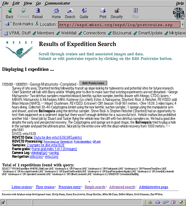

| [docs/upcoming.htm]
|
Where was the R/V Point
Lobos?
An Introduction to MBARI's new Expedition and
ROV CTD databases
Expedition Database Development Team*
Monterey Bay Aquarium Research Institute
Friday, November 19, 1999
12:00 Noon—Pacific Forum

This seminar has two parts. In the first part we will demonstrate the new web interface
that you can use to interact with Expedition information and data. Specifically, we will
show how you can:
- Search the Expedition database and find data and/or images
- Enter pre-cruise plans
- File post-cruise reports
- Enter comments about data quality, etc.
In the second part we will go a little more in-depth and show other ways into our
databases, covering SQL, the documentation that is available, and what tools one needs on
their own computer to do more advanced queries.
*Holly Baum, Mark Blackburn, Judith Connor, Karen Kroslowitz, Mike McCann, Debbie
Meyer, Jenny Paduan, Rich Schramm, Rob Sherlock, Dan Wilkin
Next: Sex and the
single fish—or what good is genetic diversity?
Last updated: January 27, 2000 |